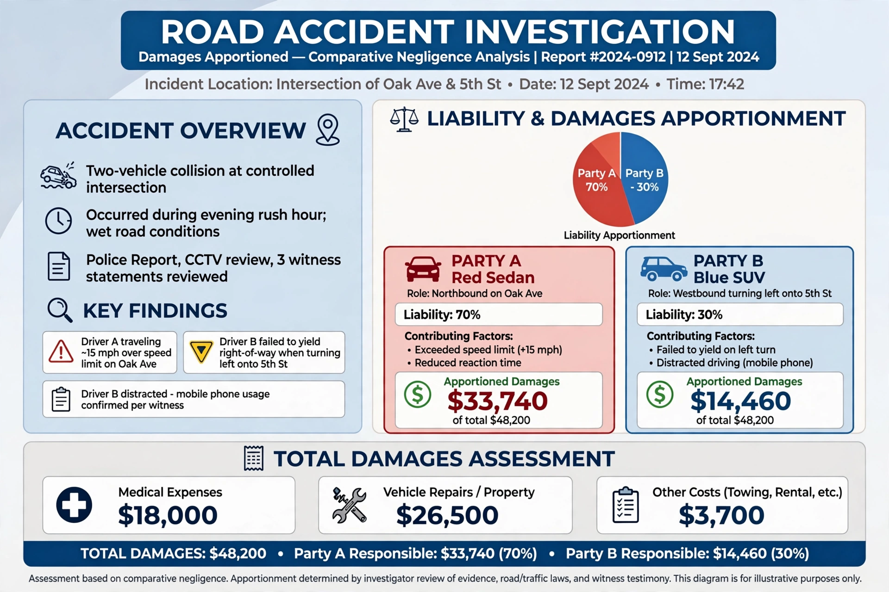

Comparative negligence, also called comparative fault, is a legal doctrine by which a claimant's damages in a negligence action are reduced in proportion to the claimant's own share of fault, rather than being barred entirely. It replaced, in most jurisdictions, the harsher common-law rule of contributory negligence, under which any fault on the claimant's part, however slight, defeated the claim completely.
Under pure comparative negligence, a claimant recovers damages reduced by their percentage of fault even if mostly to blame: a claimant 90 per cent at fault still recovers 10 per cent of the loss. California adopted this rule judicially in Li v. Yellow Cab (1975), and it applies in states including Florida, New York and Washington. Under modified comparative negligence, recovery is barred once the claimant's fault reaches a threshold — either 50 per cent (the claimant must be less than 50 per cent at fault) or 51 per cent (the claimant must not be more at fault than the defendant). The majority of US states follow one of the modified forms; only a handful retain pure contributory negligence.
Contributory negligence arose in England with Butterfield v. Forrester (1809) and was exported throughout the common-law world. Its perceived harshness prompted legislative reform: Britain's Law Reform (Contributory Negligence) Act 1945 introduced apportionment "to such extent as the court thinks just and equitable", and admiralty law had earlier moved from divided damages to proportional allocation, confirmed in the United States in United States v. Reliable Transfer (1975). Most US states adopted comparative fault by statute or judicial decision during the twentieth century.
The fact-finder assigns percentages of fault to each party (and sometimes to non-parties), and damages are apportioned accordingly. Comparative fault interacts with joint and several liability — whether each defendant is liable for the whole judgment or only its share — and with doctrines such as assumption of risk, which many jurisdictions merged into the comparative fault analysis. In product liability and multi-vehicle accident litigation, allocation among numerous parties can be intricate.
Supporters of comparative negligence argue it matches liability to actual blameworthiness and avoids windfalls for slightly careless claimants being denied recovery against grossly negligent defendants. Defenders of the older rule cited simplicity and incentives for self-protection, but its all-or-nothing character led most legal systems to abandon it.
See also: Negligence, Contributory negligence, Tort.